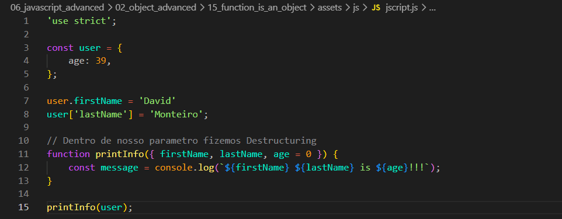
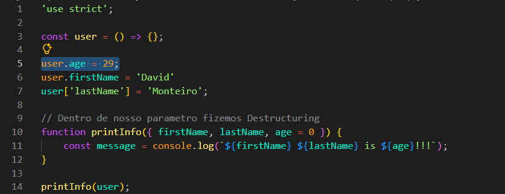

Function is an Object
Intro
Agora iremos ver oque diferencia objetos de funcoes.
Agora iremos ver oque diferencia objetos de funcoes.
JS:

Com o código acima, podemos observar que fizemos um destructuring do nosso objeto diretamente no parâmetro da função. Com isso, extraímos as propriedades do objeto recebido e também definimos valores padrão para elas. Caso uma propriedade não exista no objeto, será utilizado o valor padrão informado no parâmetro. Ao final, a função imprime os valores utilizando o próprio destructuring.
Podemos também fazer uma mudança em nosso const user e deixá-lo da seguinte forma:
const user = () => {};
Dessa forma, ao chamar a função, ela também irá funcionar normalmente.
A única diferença dessa sintaxe é que não conseguimos adicionar uma propriedade diretamente na criação da função. Caso seja necessário, devemos adicioná-la separadamente. Ex:
Se não passarmos um user.age = 29, como temos age = 0 definido no parâmetro, será utilizado esse valor padrão. Ou seja, o valor de age será 0, pois nenhuma propriedade age foi encontrada.

A principal diferença entre uma função e um objeto é que uma função pode ser chamada (executada), enquanto um objeto comum não.
Exemplo de objeto: não podemos chamá-lo diretamente. Exemplo:
const user = {};
Ao chamar: user(); // dará erro.
Exemplo de função: se fizermos const user = () => {}, ela poderá ser chamada normalmente. Também podemos adicionar código dentro de suas chaves {}. Exemplo:
const user = () => {
console.log(123);
};
user();
Quando chamamos a função, todo o código dentro dela é executado normalmente.
O mesmo também acontece com um array []: ele é um objeto, portanto não pode ser chamado como uma função.
Conteúdo da aula